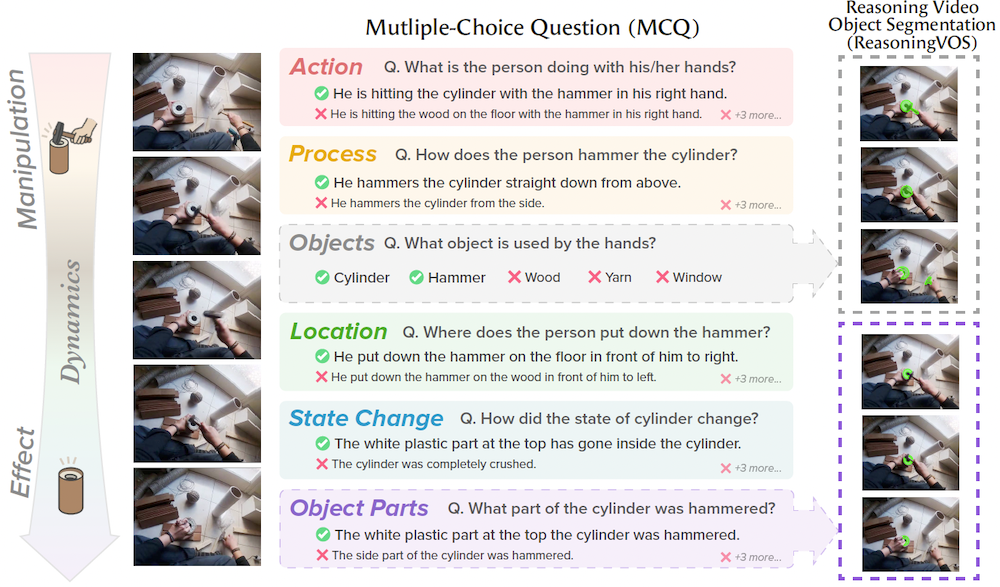
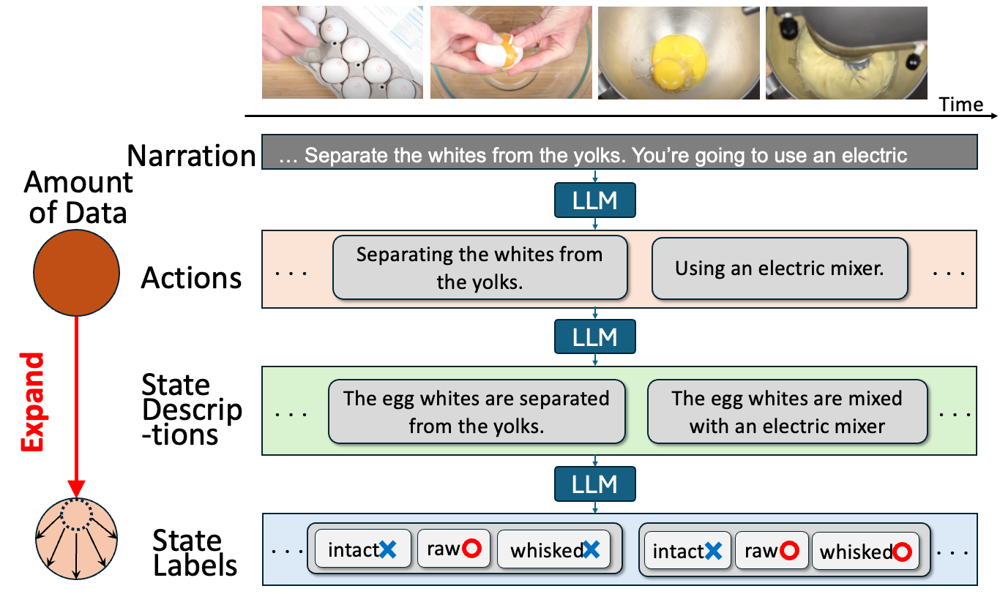
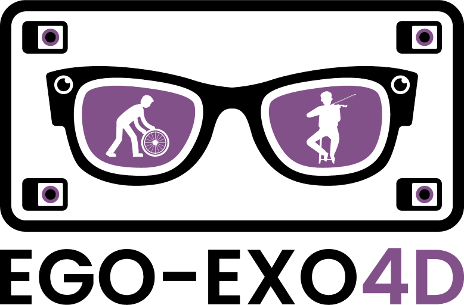

舘野 将寿
Masatoshi Tateno
I am a second-year Ph.D. student at the Graduate School of Information Science and Technology, The University of Tokyo, advised by Prof. Yoichi Sato.
Before that, I graduated from the same department in 2022 and got Master’s Degree of Information Science and Technology. I also worked as Research Assistant at AIST (2023-2024).
Email: masatate[at]iis.u-tokyo.ac.jp
News
-
(Feb 2026)
🔥 CVPR 2026 — My new paper HanDyVQA: A Video QA Benchmark for Fine-Grained Hand-Object Interaction Dynamics got accepted to CVPR 2026 🎊. See you in Denver!
-
(Dec 2025)
My new paper HanDyVQA: A Video QA Benchmark for Fine-Grained Hand-Object Interaction Dynamics is released on arxiv.
-
(Oct 2024)
🔥 WACV 2025 — My new paper Learning Multiple Object States from Actions via Large Language Models has been accepted by WACV 2025 🎉. See you in Arizona!
-
(Sept 2024)
I started a one-year visit to University of Bristol, collaborating with Prof. Dima Damen.
- (July 2024)
Research Interest
- Human action and object state recognition in videos
- Vision and language
- First-person vision
Publication

HanDyVQA: A Video QA Benchmark for Fine-Grained Hand-Object Interaction Dynamics
Masatoshi Tateno, Gido Kato, Hirokatsu Kataoka, Yoichi Sato, Takuma Yagi
CVPR 2026

Learning Multiple Object States from Actions via Large Language Models
Masatoshi Tateno, Takuma Yagi, Ryosuke Furuta, Yoichi Sato
WACV 2025

Ego-Exo4D: Understanding Skilled Human Activity from First- and Third-Person Perspectives
Kristen Grauman, Andrew Westbry, Lorenzo Torresani, Kris Kitani, Jitendra Malik, ..., Masatoshi Tateno, ..., Michael Wray
CVPR 2024